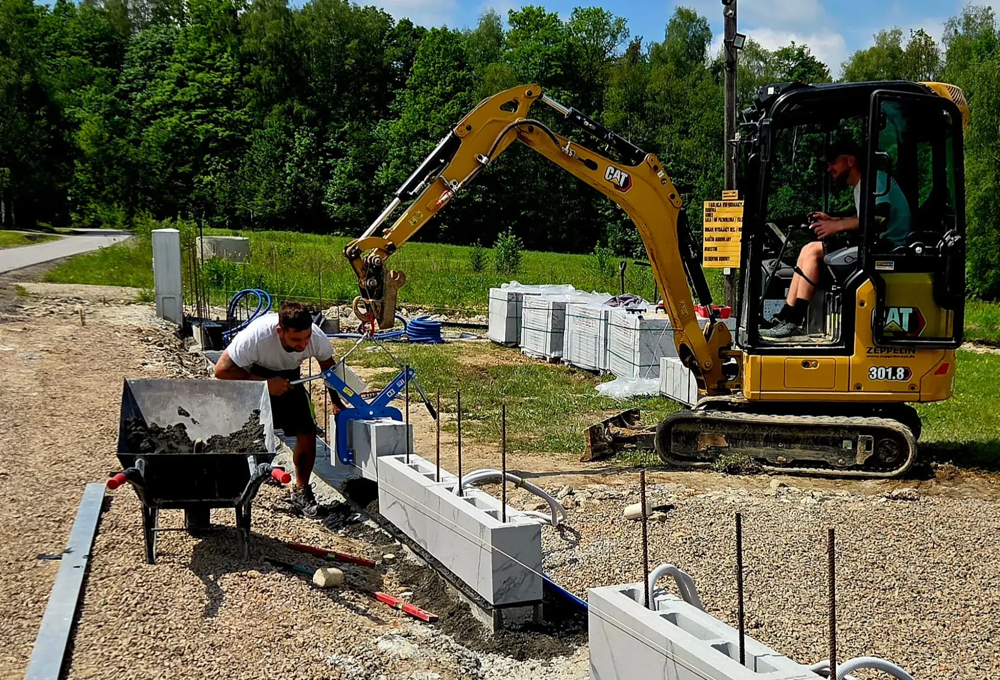
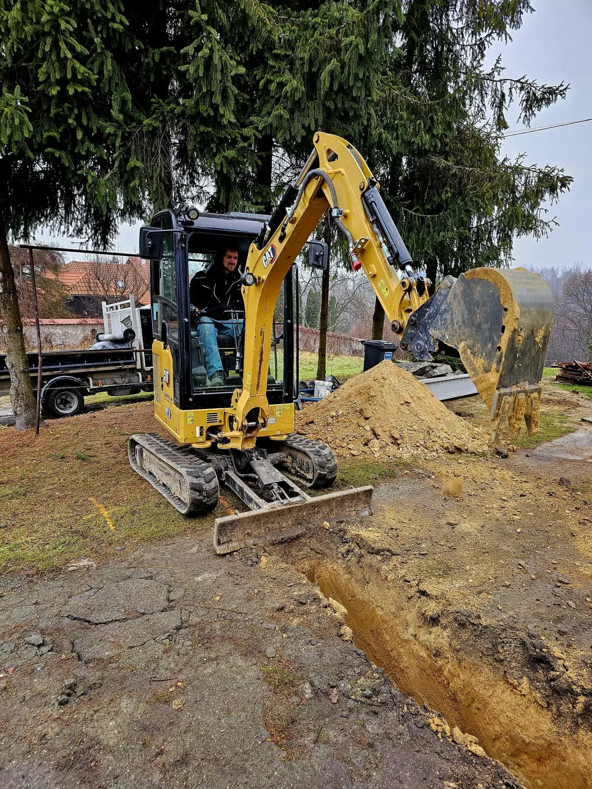
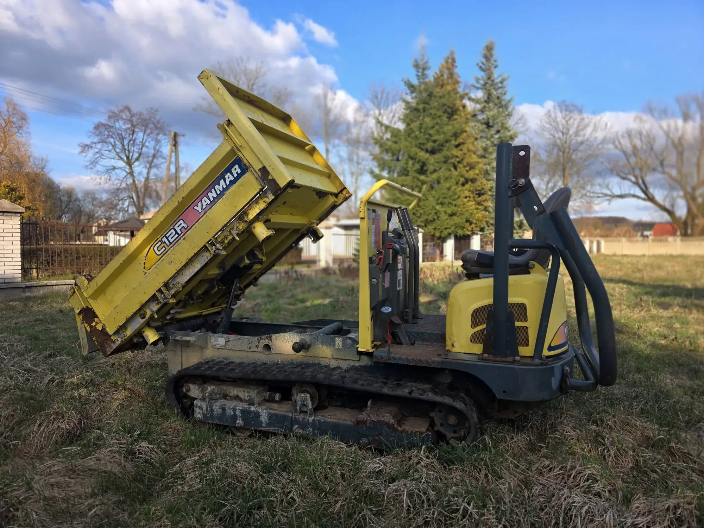
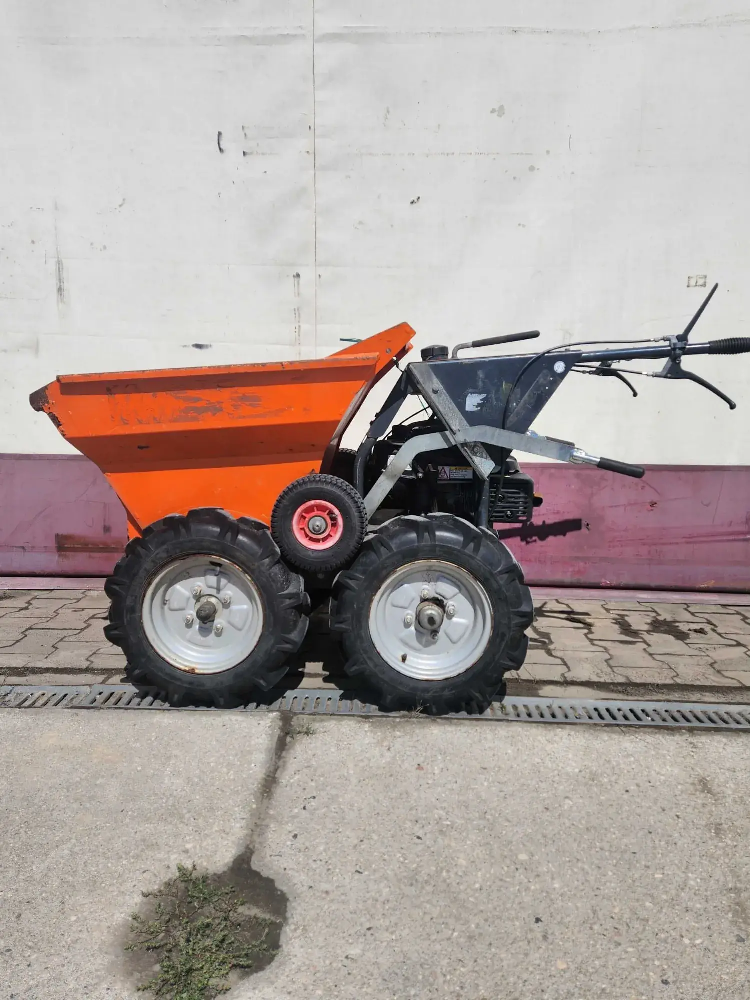
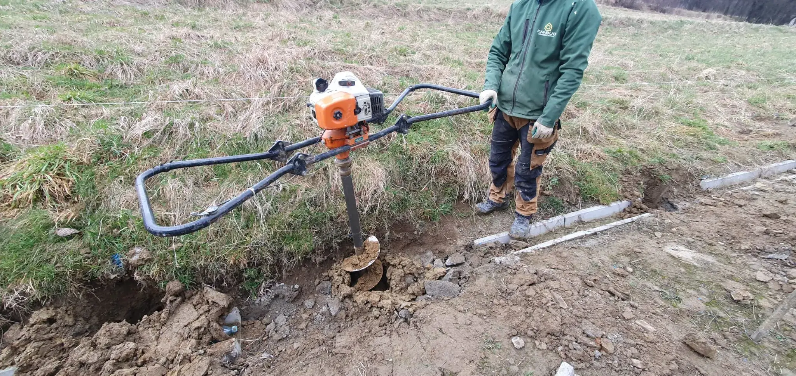

Solidne ogrodzenia na lata – doradzimy, pomierzymy, zamontujemy wszystko od A do Z.
Działamy na terenie Myślenic i okolic. Szybkie terminy, solidne wykonanie. Zaufaj doświadczonej firmie z Małopolski.
Nasze usługi
Oferujemy kompleksowe usługi związane z ogrodzeniami – od projektu po montaż. Sprawdź, co możemy dla Ciebie zrobić.
Ogrodzenia panelowe
Trwałe i uniwersalne systemy panelowe. Idealne do nowoczesnych posesji prywatnych oraz obiektów przemysłowych.
Zobacz zdjęciaOgrodzenia z siatki
Ekonomiczne i solidne ogrodzenia z siatki zgrzewanej lub plecionej. Doskonałe na działki i tereny leśne.
Zobacz zdjęciaOgrodzenia z bloczków
Reprezentacyjne ogrodzenia z bloczków betonowych gładkich i łupanych. Ponadczasowa solidność i design.
Zobacz zdjęciaOgrodzenia gabionowe
Nowoczesne kosze stalowe wypełnione kamieniem naturalnym. Zapewniają prestiżowy wygląd i świetną izolację akustyczną.
Zobacz zdjęciaOgrodzenia sztachetowe
Klasyczne i nowoczesne ogrodzenia ze sztachet metalowych lub kompozytowych. Estetyka połączona z trwałością.
Zobacz zdjęciaOgrodzenia przemysłowe
Wytrzymałe systemy ogrodzeniowe dla firm, magazynów i fabryk. Gwarancja najwyższego poziomu zabezpieczenia.
Zobacz zdjęciaOgrodzenia tymczasowe
Mobilne ogrodzenia budowlane i ażurowe. Szybki montaż, stabilność i pełne bezpieczeństwo placu budowy.
Zobacz zdjęciaBramy, furtki, przęsła
Kompleksowe systemy wjazdowe z pełną automatyką. Perfekcyjne dopasowanie do każdego stylu ogrodzenia.
Zobacz zdjęciaMury oporowe
Prefabrykowane i wylewane konstrukcje stabilizujące grunt. Solidny fundament pod podmurówki ogrodzeniowe.
Zobacz zdjęciaDlaczego KM-BUD?
Jesteśmy lokalną firmą z Myślenic z wieloletnim doświadczeniem w branży ogrodzeń. Stawiamy na jakość i zadowolenie klientów.
Doświadczenie i profesjonalizm
500+ zrealizowanych projektów na terenie Małopolski. Znamy się na tym, co robimy.
Lokalna firma
Działamy w Myślenicach i okolicach. Znamy lokalne warunki gruntowe i potrzeby klientów.
Szybkie terminy realizacji
Rozumiemy, że czas ma znaczenie. Realizujemy zlecenia terminowo i sprawnie.
Gwarancja jakości
Używamy najwyższej jakości materiałów. Oferujemy gwarancję na nasze realizacje.
Park Maszynowy
Dysponujemy nowoczesnym, profesjonalnym sprzętem, który pozwala nam na samodzielną i sprawną realizację każdego etapu prac – od precyzyjnych wykopów po profesjonalny montaż.

WykopyMinikoparka
Precyzyjne i sprawne wykopy pod fundamenty ogrodzeń, słupki oraz murki oporowe w każdych warunkach glebowych.
- Praca w trudnodostępnych miejscach
- Precyzyjne i równe wykopy liniowe

TransportWozidło Gąsienicowe
Błyskawiczny transport urobku, ziemi oraz betonu. Szerokie gąsienice chronią trawnik i podłoże przed zniszczeniem.
- Zminimalizowany nacisk na podłoże
- Wydajny transport ciężkich materiałów

Wąskie przejściaTaczka Spalinowa
Niezastąpiona przy przewożeniu kruszywa, betonu i zaprawy murarskiej na ciasnych i gęsto zagospodarowanych posesjach.
- Wyjątkowa zwrotność i kompaktowość
- Szybki załadunek i rozładunek

OdwiertyWiertnica Glebowa
Szybkie, mechaniczne wiercenie precyzyjnych otworów w ziemi pod słupki ogrodzeniowe. Gwarancja idealnego pionu.
- Równomierna, idealna głębokość wiercenia
- Drastyczne przyspieszenie tempa montażu